01
Lunar Rover system
Space rover autonomy and GNC software for lunar surface guidance, navigation, and mobility.

Contact us for a DemoSpace
Lunar Rover system for space rover operations and GNC software under degraded comms. Human-on-the-loop (HOTL) lets AI operate autonomously, with operators monitoring and intervening only when necessary for autopilot-like efficiency and speed.
Overview
This page now holds the dedicated space content and can expand with rover system specifications, mission concepts, HOTL workflows, and space-grade GNC details.
01
Space rover autonomy and GNC software for lunar surface guidance, navigation, and mobility.
02
Operators stay in the loop only when needed while autonomy handles the routine mission workload.
03
Mission autonomy built for supervision, planning, and route confidence when connectivity is limited.
Partners